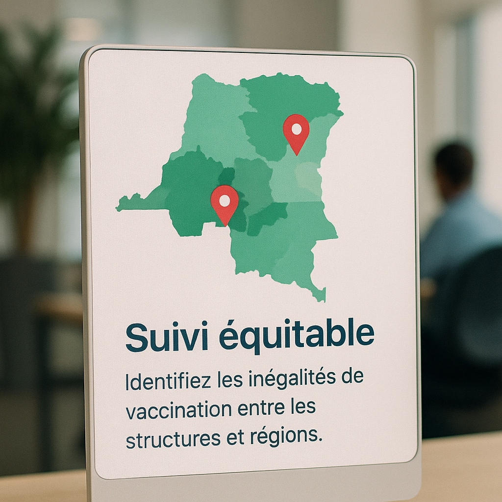

Suivi équitable
Identifiez les inégalités de vaccination entre les structures et régions.
Export des retards
Téléchargez les listes des enfants en retard pour traitement et suivi.
Surveillance des soins
Vérifiez la couverture vaccinale et la qualité des soins par établissement.
📊 Statistiques en temps réel
Chargement...